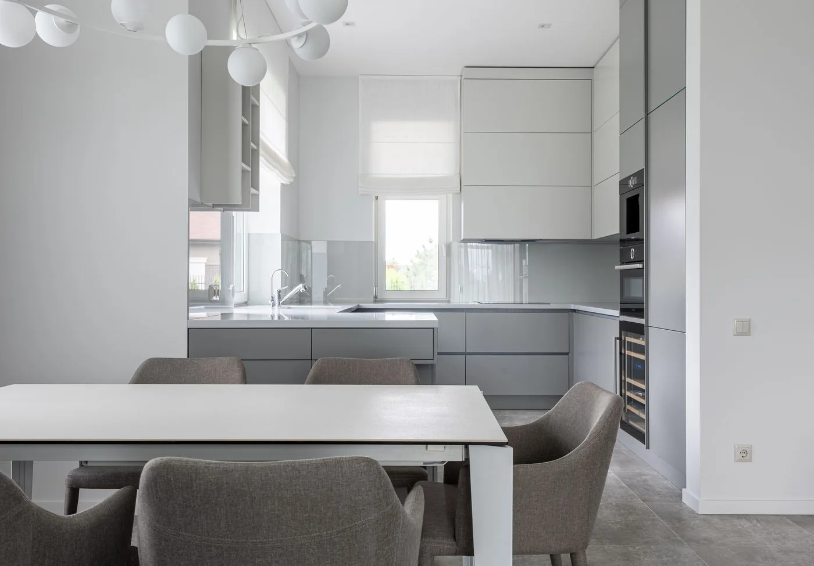
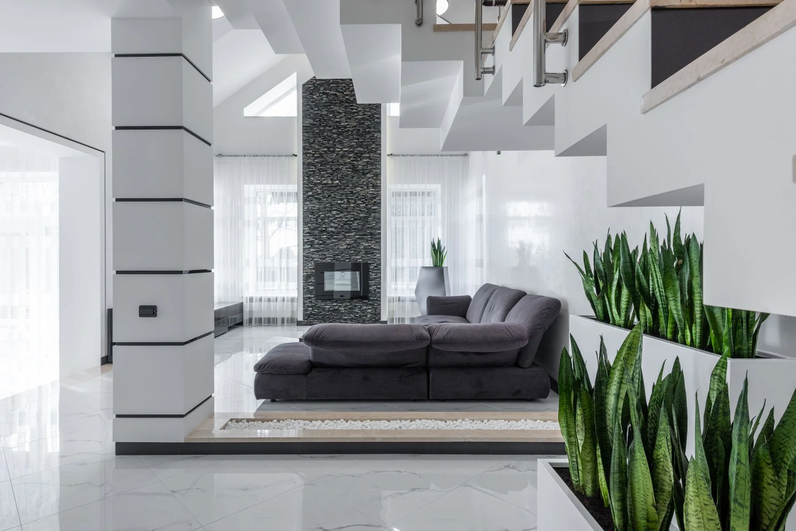
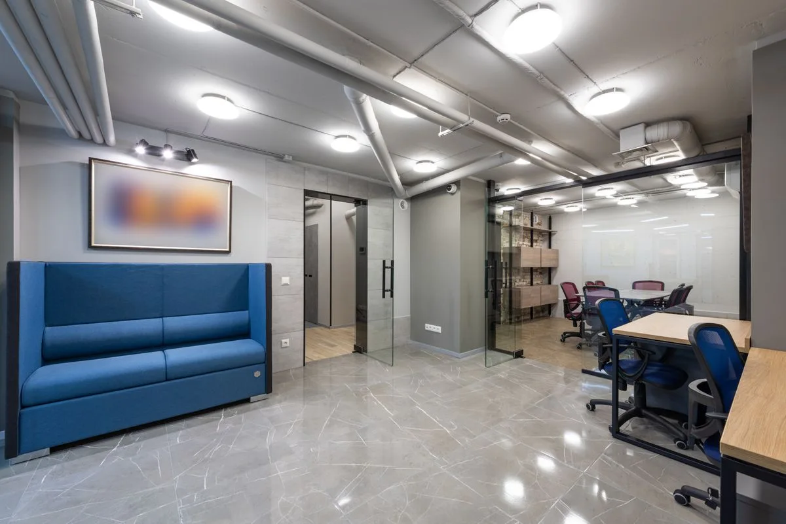

01Mai mult timp pentru acasă.
Curățenie la domiciliu
O curățenie generală sau întreținere periodică, adaptată locuinței tale și ritmului tău.
Ce putem face
- Bucătărie și baie
- Pardoseli și suprafețe
- Curățenie generală sau periodică
CURĂȚENIE PROFESIONALĂ ÎN SIBIU
Mai puține griji. Mai mult timp pentru tine. Avem grijă de curățenia spațiului tău, cu atenție la fiecare detaliu.
5,0 din 2 recenzii pe Google
UN NOU ÎNCEPUT, ÎN FIECARE ZILocul tău. Îngrijit cu atenție.
LEXYNS CLEAN · SIBIU01 / CE FACEM
Acasă, la birou sau după o renovare. Discutăm despre ce ai nevoie și alegem împreună intervenția potrivită.

01Mai mult timp pentru acasă.
O curățenie generală sau întreținere periodică, adaptată locuinței tale și ritmului tău.

02Un loc mai bun pentru lucru.
Spații îngrijite pentru echipă și clienți. Stabilim un program potrivit activității tale.
Ultimul pas înainte de mutare.
De la praful fin la suprafețele care au nevoie de atenție. Pregătim spațiul pentru a fi folosit din nou.
Mai mult decât curățenie.
Grijă pentru locul tău.
02 / FELUL NOSTRU DE A LUCRA
Un spațiu curat înseamnă mai mult decât ordine. Înseamnă să te simți bine când intri pe ușă.
Suntem Lexyns Clean, o firmă de curățenie din Sibiu. Ascultăm ce ai nevoie, discutăm detaliile și tratăm spațiul tău cu respect. Pentru noi, lucrurile mici fac diferența.
De la suprafețele folosite zilnic la colțurile care trec ușor neobservate.
Stabilim împreună ce include intervenția, programul și oferta.
O singură intervenție sau curățenie periodică, în funcție de spațiul tău.
03 / SIMPLU, DE LA ÎNCEPUT
Fără pași complicați. Doar o conversație și un plan clar.
Sună-ne sau scrie-ne. Spune-ne unde se află spațiul, ce suprafață are și ce fel de curățenie îți dorești.
Discutăm serviciile, disponibilitatea și prețul, înainte să confirmăm programarea.
Ne ocupăm de intervenția stabilită, iar tu te bucuri din nou de spațiul tău.
04 / BINE DE ȘTIUT
Mai ai o întrebare?
Ne găsești la 0754 679 238.
Sună-ne sau trimite-ne un mesaj cu tipul spațiului, suprafața aproximativă și serviciul dorit. Oferta se stabilește după ce discutăm detaliile intervenției.
Da, putem discuta o variantă de întreținere periodică. Frecvența și programul se stabilesc în funcție de nevoile spațiului și de disponibilitate.
Ne găsești în Sibiu. Pentru o intervenție în localitățile din apropiere, contactează-ne ca să verificăm disponibilitatea și detaliile deplasării.
Stabilim împreună accesul în spațiu și orice instrucțiuni importante, înainte de programare. Spune-ne preferințele tale în prima discuție.
O programare este confirmată doar după discuția cu echipa Lexyns Clean. Un mesaj trimis de pe site reprezintă o cerere, nu o rezervare automată.
05 / NE AUZIM?
Spune-ne ce ai nevoie. Împreună găsim varianta potrivită pentru spațiul tău.
NE GĂSEȘTI ÎN SIBIU
Programarea intervențiilor se stabilește telefonic.
Intervențiile se realizează la adresa clientului.